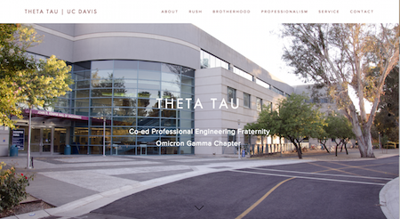
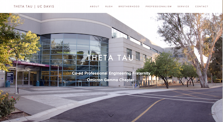

ABOUT ME

Hello everyone! My name is Chloe Shiau and I am a senior at UC Davis studying Computer Science with an intended minor in Asian American Studies.
I am currently interning at Adobe on the helpX team at the San Jose Headquarters. I am also an active member in Theta Tau, a professional engineering fraternity.
When I am not coding, I enjoy baking sweets, cooking for friends + family, traveling, photography (pictures above), and hunting for delicious foods wherever I go.
Welcome to my website!
EXPERIENCE
SKILLS
Programming Languages: CSS, HTML, JavaScript, C++, C, Java, Perl, Prolog, Lisp, x86 Assembly
Computer: Microsoft Word, Excel, PowerPoint, Outlook, and Adobe Photoshop
Languages: Fluent in English and Cantonese, elementary Mandarin and Spanish
Other: Scrum, excellent communication skills, quick learner, and work well in groups
WORK + INTERNSHIPS
Adobe Systems
Software Engineering Intern
San Jose, CA | Jun 2015 - Present
Williams-Sonoma, Inc.
IT eCommerce Infrastructure Intern
San Francisco, CA | Jun 2014 – Aug 2014
• Participated in the Software Development Life Cycle (SDLC) of developing a web portal for managing different interacting components within an order management system
• Participated in the SCRUM process in the development team and learned an efficient and iterative development cycle
• Established a logical plan with other IT interns that showed how the company will run both in stores and online in ten years
VSP Global
Software Development Intern
Rancho Cordova, CA | Jan 2014 – Jun 2014
• Assisted development team in Global Technology Systems with data analysis, software testing, and software development
• Translated ILOG JRules into Drools JBoss Rules (coding in Java) using IBM’s Rational Application Developer and Eclipse
• Attended daily meetings and video conferences with facilities in different states to exchange ideas about the Drools project
UC Davis College of Engineering
EACS Lab Assistant
Davis, CA | Sept 2013 - Present
• Oversee daily usage of Engineering Academic Computing Services instructional laboratory by providing security of computers
• Provide physical security for laboratory space and hardware, troubleshoot and report user problems and hardware issues
• Maintain inventory of supplies for printers and plotters as well as request supplies as needed to maintain stock on hand
RESEARCH
iWHW
Student Researcher
Davis, CA | Sept 2014 - Present
• Research APIs of many health + wellness devices and record those that share similar characteristics
• Create components on Plone that store device APIs
• Redesigning iWHW department's UCMHealthy website that portrays activity statistics pulled from health + wellness devices
ORGANIZATIONS
Theta Tau - Professional Engineering Fraternity
Webmaster
Davis, CA | Jun 2013 - Present
• Volunteer at community service events such as the college farms in UCD and our yearly philanthropy event, Relay for Life
• Prepare and hold yearly FE (Fundamentals of Engineering) review sessions for engineering students at UC Davis
• Developed + constantly update the Theta Tau Fraternity chapter website to document all activities and projects implemented


 
